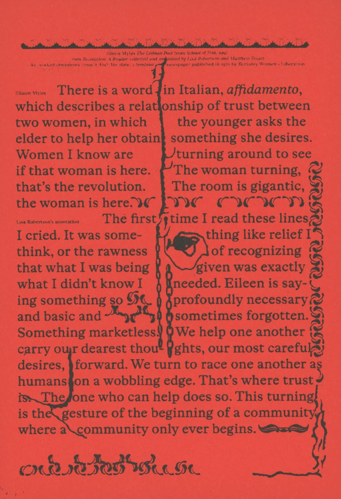

the Cadillac of onions, paint peeling, settling into its flat tire, looks tired, looks permanent

The Bitters Column is a bi-monthly publication about forming a feminist graphic design practice in conversation with others.
This is the fifth — and special — issue, publishing a text titled ‘Women* Sitting at the Machine, Thinking’, written as an expanded editorial note of sorts, meditating on four words: ‘to form a practice’.
Colophon: Big thanks to — Elisabeth Rafstedt, Johanna Ehde, Phil Baber, Samuel Solomon, Jaehyun Kim, Lisbeth Jørgensen, Bart de Baets, Linda van Deursen, Robert Milne, Barbara Neves Alves. Footer numbers by Stan Zielinski. Typeset in Mrs Eaves* by Zuzanna Licko. The cover is typeset in Olga Oppenheimer** by Bea Schlingelhoff.
*Mrs Eaves by Zuzana Licko was designed in 1996 as a tribute to Sarah Eaves, who worked as a housekeeper and later married typographer John Baskerville. As an informally trained typographer, she proceeded to complete the work with Baskerville’s unfinished volumes after his death. Within a few years of its launch, it had become one of the most successful typefaces of its day, honoring Sarah Eaves not in a monumental fashion, with a statue or a public square, but right at the level on which she worked, in print, on the typeface, just like Baskerville.
**Olga Oppenheimer by artist Bea Schlingelhoff was made available to the public in Women against Hitler, an exhibition at SCHLOSS, Oslo (2017), of typefaces dedicated to and named after women who fought the Nazi regime. In the reader on this website, you can read a text by Sadie Plant titled On Bea Schlingelhoff ’s typefaces for Women against Hitler, that accompanied the exhibition.
*
Contact: malvaaskerup@gmail.com
This is a research project into editorial practices as means for collaborative work, initiated by graphic designer Malva Askerup, as part of graduation project 2026.
Web design and development: Malva Askerup


the Cadillac of onions, paint peeling, settling into its flat tire, looks tired, looks permanent